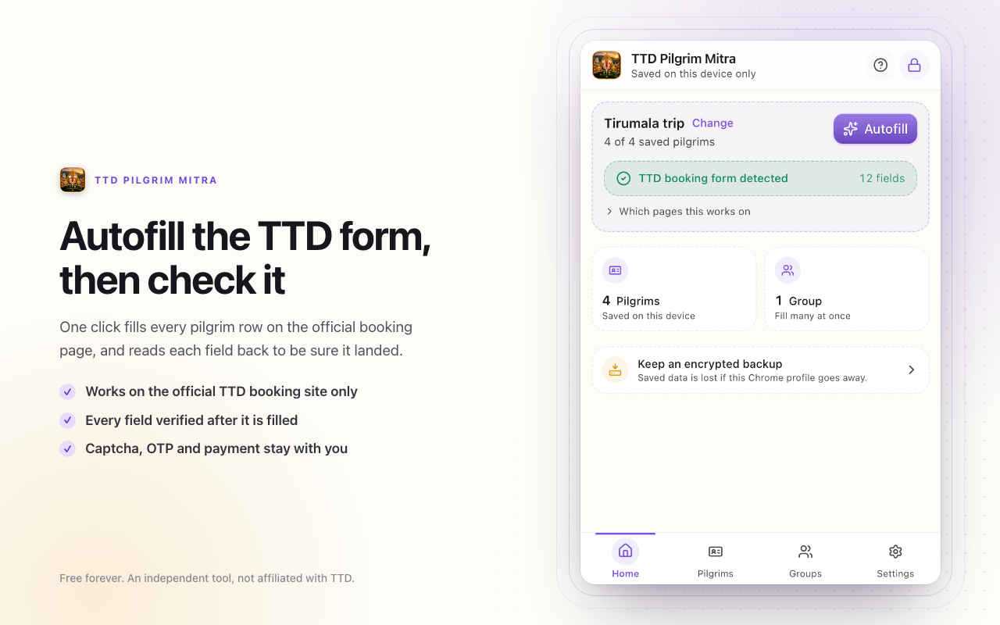

Free · Private · On your device
Save your family once. Fill the TTD form in one press.
A Chrome extension that keeps your family's pilgrim details on your own computer, encrypted behind a PIN, and types them into the official TTD booking form when you ask it to. Nothing is sent anywhere.
- No account
- No analytics
- No server
- Free forever

What it does
Save each pilgrim once
Name, age, gender, photo ID proof and number, kept for every trip after this one.
Fill the whole family
Group the people who travel together and every row on the form fills in one press.
Check its own work
Each field is read back after it is written, and you are told what actually landed.
What it never does
- Send pilgrim details anywhere. There is no account, no server and no analytics.
- Enter an OTP or solve a captcha. Those stay yours, by design.
- Choose your date, slot or ticket count, press Continue, or pay for anything.
- Improve your chances of getting a ticket. It types faster, that is all.
How your details are kept
- Encrypted on this device with your own PIN, using the browser's Web Crypto. The PIN itself is never stored.
- A recovery key is shown once when you create the vault. It is the only way back in if the PIN is forgotten.
- Backups are encrypted files written only when you ask for one, to wherever you choose.
- Three permissions and one website. Nothing else is requested, and no other page is read.
Where it works
The official TTD site, ttdevasthanams.ap.gov.in, on the pilgrim details step of a darshan, seva or accommodation booking. It is offered nowhere else.